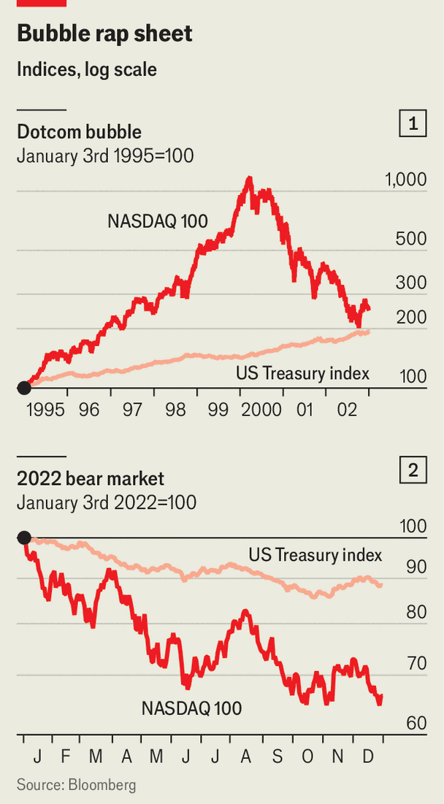

Finance & economics | Fit to burst
How to hedge a bubble, AI edition
Protecting your portfolio from a crash looks harder than ever
February 12th 2026

On February 8th sports fans watching the Super Bowl, an American-football game, were treated to an ad for Claude, an artificial-intelligence chatbot. That might have given investors with long memories an unsettling sense of déjà vu. The Super Bowl of 2000 passed into market folklore as having epitomised internet-stock mania: no fewer than 17 “dotcom” firms paid millions of dollars each for 30-second advertising slots. Weeks later share prices fell into a brutal bear market.
Back in the present, investors’ confidence in today’s emerging technology—AI—has already begun to wobble, just as companies prepare to spend jaw-dropping amounts of money to develop it. In recent weeks Alphabet, Amazon, Meta and Microsoft have said they will spend a combined $660bn on AI in the coming year. Investors who a year ago might have cheered such plans are getting cold feet. Each firm’s stock price has fallen since its announcement, though Meta’s shot up at first. Microsoft’s is down by 16%.
It is no wonder that markets feel jittery. Everyone knows that shares are expensive—especially in America, but increasingly elsewhere, too. When stock prices are high relative to underlying earnings, expected returns are low and shareholders have more to lose from a crash. The trouble is knowing which other assets might offer refuge. The price of gold, investors’ time-honoured safe haven, has swung wildly of late. One-time fans of bitcoin, a digital pretender, are losing the faith. Just as investors are searching for ways to hedge their equity risk, hedging opportunities seem few and far between.
The most obvious way to protect yourself from a stockmarket crash is to sell your stocks. Yet for most professional investors this is not an option. Some swashbuckling hedge funds can allocate their portfolios however they please, but most money managers face strict limits. When someone entrusts their capital to an equity fund, for example, they expect it to be invested in equities. Often, the portfolio manager’s mandate will prevent them from sitting on a pile of cash; if not, doing so would still invite angry calls from clients, followed by withdrawals. They can keep cash in their own bank accounts, after all, without paying the manager’s fees.
Individuals have no such restrictions, but selling up because stocks look pricey can still be a bad strategy. During the dotcom bubble, the valuation of the tech-heavy NASDAQ index relative to expected underlying earnings rose to multiples of its current level. In the five years to its peak in March 2000 the index suffered corrections of 10% or more on at least a dozen occasions. Any of these might have prompted the nervous to cut their losses. Over the same period, however, it ultimately rose nearly 12-fold. Even at the bottom of the subsequent plunge, investors who had simply bought at the start of 1995 and held on would have doubled their money.

A good strategy for hedging stockmarket risk is one that does not suppress returns too much on the way up, then cushions losses on the way down. Sifting through the wreckage of the dotcom crash is a helpful way to think about how the various candidates might perform today. Broadly, they fit into three categories: the classic split between stocks and bonds; exotic strategies involving derivatives; and the use of alternative diversifiers.
For asset allocators with the freedom to do so, buffering stocks with bonds would have worked well during the late 1990s. The borrowing costs of rich-world governments were falling as the high inflation of the 1980s faded into memory, granting windfall gains to bondholders (since prices move inversely to yields). From early 1995 to the NASDAQ’s March 2000 peak, Bloomberg’s index tracking the total returns from a basket of American Treasuries rose by nearly 50%. As share prices plummeted, central bankers slashed interest rates and bondholders benefited from falling yields again. As the NASDAQ fell from peak to trough, the Bloomberg Treasury index rose by another 30% (see chart 1).
It is not clear, however, that government bonds are still as useful for hedging equity risk today. During the last prolonged bear market, in 2022, both asset classes suffered as inflation rose sharply and interest rates followed (see chart 2). Ask investors today what might end stockmarkets’ bull run, and resurgent inflation—and the hawkish response it would require from central bankers—will top plenty of lists. That would mean share and bond prices falling in tandem once more.
Others will recall the short-lived panic that followed the unveiling of President Donald Trump’s “Liberation Day” tariffs last April. Then, for a brief spell, Treasuries and stocks also dropped together as investors worried that the White House’s erratic policymaking would endanger the bonds’ status as a haven asset for international investors. It is easy to imagine the next leg down in share prices being triggered by similar concerns, or by questions over the sustainability of rich-world governments’ vast borrowing. In either case, stocks and bonds would both be in the firing line.
A second category of hedging strategies involves derivative contracts called options. These have long been used by hedge-fund managers and other professional investors, but are increasingly sold by retail brokers, too. “Overlaying” a stock portfolio with options allows an investor to harvest most of the profits when share prices are rising, then to restrict their losses once the cycle turns.
A “put” option on a stock, for example, confers the right but not the obligation to sell the stock at a pre-agreed “strike” price on some specified future date. If you also own the underlying stock, the effect is to cut off your potential losses beyond a certain point. Set the strike at 90% of the current price, say, and the option to sell at that strike means you cannot lose more than 10% of your initial holding. A put option on the S&P 500 share index that limits losses to 10% over the coming year currently costs 3.6% of the underlying amount to be protected. In other words, an investor who agrees to give up 3.6 percentage points of their returns can be protected from a crash.
The trouble is that the performance of such hedges depends heavily on the choice of strike price and expiration date. Analysts at Goldman Sachs, a bank, compared how two strategies using put options on the S&P 500 would have performed from 1996 to 2002. One involved buying a series of one-year options, each limiting losses to 10%; the other, a series of one-month options limiting losses to 4%. Though both would have offered protection as the dotcom bubble burst, the costs of repeated option purchases would have snowballed. Overlaying a stock portfolio with the one-year options would have resulted in roughly the same annualised return as unhedged stocks (albeit with less volatility). Overlaying it with one-month options would have generated a substantially worse return, despite the crash.
Some of the most effective strategies the Goldman analysts found fell into the third category: combinations of stocks and non-bond diversifiers. In fact, the best diversifiers were mostly filtered baskets of stocks, such as the S&P 500 “low volatility” subindex, which includes the 100 least volatile stocks in the main index. A 50/50 split between this and the S&P 500 would, from 1996 to 2002, have generated nearly twice the annualised excess returns (over cash) of the S&P 500 index alone. So would a similar split with the S&P 500 “dividend aristocrats” index, which includes only companies that have increased their dividends every year for the past 25. Diversifying into “quality” stocks (with high returns on equity, stable earnings and low net debt) would have brought similar returns.
Today, the idea that the best way to hedge equity risk is with equities feels unsatisfying. Considering the alternatives, though, it might just be the best shareholders can do. ■
For more expert analysis of the biggest stories in economics, finance and markets, sign up to Money Talks, our weekly subscriber-only newsletter.